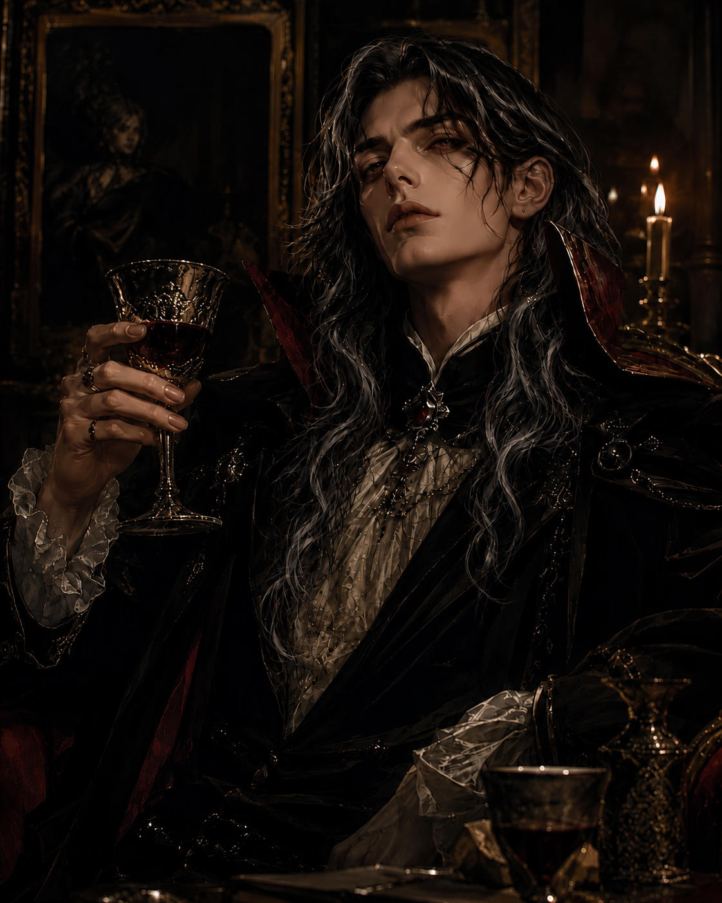
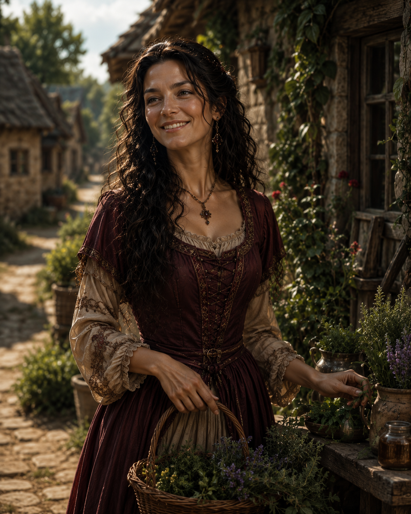
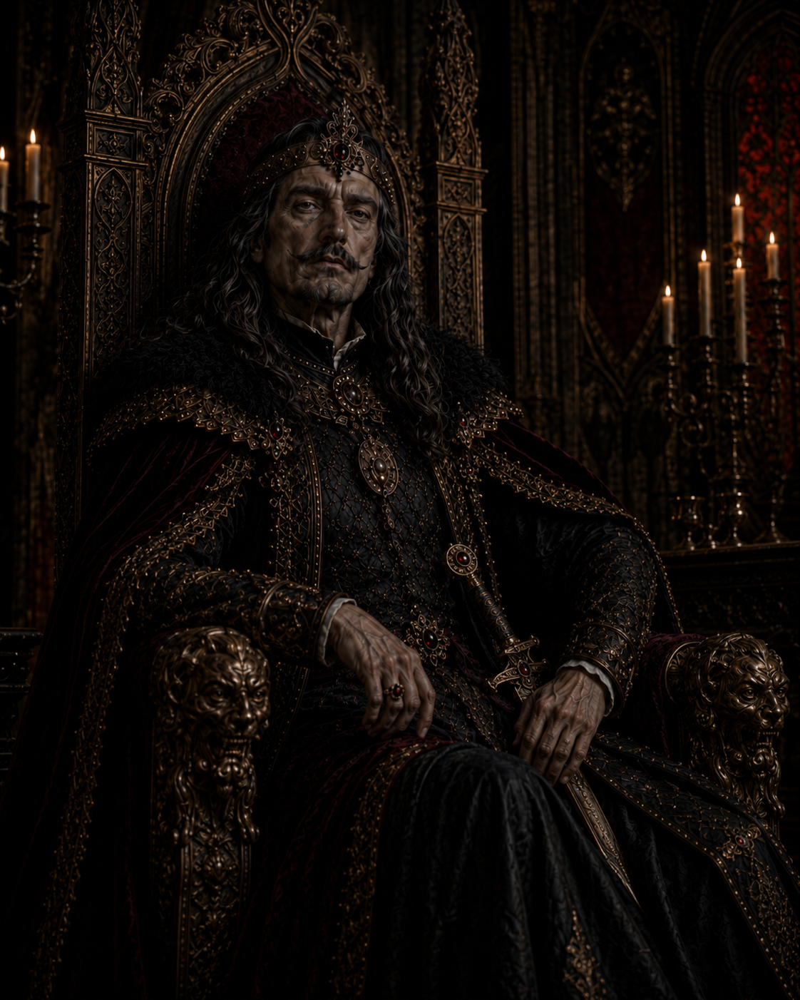

Count Dracula, the iconic vampire and central figure in the Castlevania series.
Count Dracula
Count Dracula is the lord of the castle and the most feared member of the Tepes family.
After Lisa’s death, his love turned into grief, and his grief became a curse over his name.
The curse of Dracula represents the darkness, revenge, and sorrow that follows his bloodline.
His story is not only about power, but also about the tragedy of losing the person who kept his humanity alive.

Alucard, the son of Dracula, known for his complex relationship with his father and his role as a protagonist .
Alucard (Adrian Fahrenheit Tepes)
Adrian Fahrenheit Tepes or known as Alucard is the son of Dracula and Lisa, making him half-human and half-vampire.
Because of his mixed identity, he struggles between the darkness of his father’s bloodline and the humanity he inherited from his mother.
His story shows the conflict of choosing his own path instead of simply following the destiny of his family.

Lisa, Dracula's wife and a human woman, who played a significant role in Dracula's backstory.
Lisa Tepes
Lisa is Dracula's wife and Alucard's human mother.
She brings kindness and humanity into the Tepes family.
Her love helps show the softer side of Dracula's dark story.
She was kind and wanted to help people, but her death became a tragedy for the Tepes family.
After losing Lisa, Dracula's grief turned into rage and changed the future of the castle.

Vlad II Dracul, the father of Dracula.
Vlad II Dracul
Vlad II Dracul stands as the old ruler behind the Tepes family legacy.
His name carries authority, nobility, and the first shadow of the family’s dark history.
Before Dracula became feared, Vlad’s bloodline had already begun shaping the power and mystery surrounding the family.